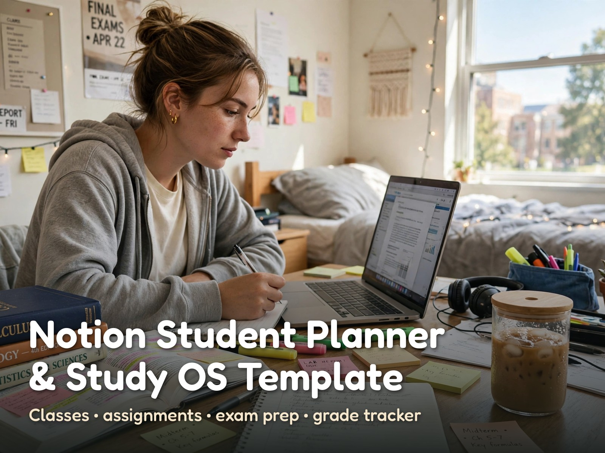

$12 USD — instant download
Notion Student Planner & Study OS Template — Classes, Assignments, Exam Prep & Grade Tracker
Get it on GumroadThe semester does not fall apart in exam week. It falls apart quietly, weeks earlier: the assignment mentioned once in a syllabus, the deadline that was ‘next week’ three weeks ago, the exam you started revising for two days out. Memory and scattered group chats cannot hold a semester — they were never going to. This template holds it instead: every class, assignment, exam and grade in one Notion workspace built around a semester dashboard.
The semester dashboard is one home page per semester: this week's classes, assignments due soon, exam countdowns and current grades at a glance — the page you open with your morning coffee. The class schedule page puts your full weekly timetable in one view: subject, day, time, room or meeting link and teacher, so ‘where is this class again?’ never costs you a late arrival. The assignment tracker database holds every task with its subject, due date, status (Not Started → In Progress → Submitted → Graded) and priority, sorted so the nearest deadline is always on top — nothing hides at the bottom of a chat thread again.
The exam prep planner builds one plan per exam: the topic list to cover, a countdown study schedule that spreads revision across the weeks you actually have, and a past-paper checklist. The grade tracker keeps every score in one database with its subject and weight, so you can see what a grade does to your average the day you get it — not when the transcript surprises you. The study session log records each session with subject, duration and what you covered; weekly totals show whether your hours match your priorities, or whether one easy subject is eating the time a hard one needed.
Buy on Gumroad and download the PDF instantly. The PDF contains your template link: open it, click Duplicate in the top-right corner, and the whole system copies into your own Notion workspace â yours to edit, forever. You only need a free Notion account; everything in this template works on Notion's free plan, on phone, tablet and desktop. A getting-started page inside has you set up before the semester starts moving: add your classes, enter every deadline from your syllabi, set your grade weights, and build your first exam plan. It suits high-school and university students running a real semester. Honest note: this template organizes studying; it does not do the studying, and it will not raise a grade by itself. What it removes is the ambush â the deadline you never saw coming and the revision that started two days late.
This is a digital download — no physical item will be shipped. For personal use; please do not redistribute or resell the file.